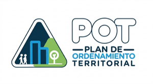
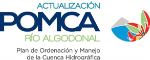

Gestión del riesgo
Consulta mapas de amenazas, exposición y riesgo para apoyar la toma de decisiones.
Visión Ambiental, Ocaña Interactiva
Bienvenido a
(VAOI)
Explora información geográfica y temática del territorio para la planificación, gestión, participación y toma de decisiones en Ocaña.
Tu asistente de VAOI. ¿En qué puedo ayudarte hoy?
Consulta mapas de amenazas, exposición y riesgo para apoyar la toma de decisiones.
Infórmate y participa en los espacios de diálogo y construcción colectiva del territorio.

Consulta los planes de ordenamiento territorial y contenidos clave del municipio.

Accede a información sobre cuencas hidrográficas, planificación y manejo ambiental.
Integra información vial, indicadores, reportes y análisis temáticos sobre tránsito y seguridad vial.
Módulo
Selecciona una capa temática y visualiza la información sobre el territorio.
Módulo
Espacios comunitarios, rutas de participación, materiales pedagógicos y procesos colectivos.
Aquí podrás mostrar procesos participativos y resultados de trabajo con la comunidad.
Módulo
Plan de Ordenamiento Territorial, normativa, conceptos base y contenidos municipales.
Aquí podrás mostrar el contenido del Plan de Ordenamiento Territorial.
Explora la información ambiental y de planificación sobre la cuenca hidrográfica del río Algodonal. Integra conceptos, documentos, normativas y cartografía para apoyar la gestión sostenible del territorio.
El Plan de Ordenación y Manejo de Cuencas Hidrográficas es un instrumento de planificación que orienta el uso sostenible de los recursos naturales y la gestión integral del territorio.
Consulta los mapas y documentos técnicos del POMCA.
Mapa base general del POMCA Río Algodonal.
Organización territorial del área de estudio.
Red hídrica principal y secundaria de la cuenca.
Representación de cuencas y subcuencas del sistema.
Caracterización de suelos en la cuenca del río Algodonal.
Clasificación ecológica de zonas de vida presentes.
Mapa temático de ecosistemas presentes en la cuenca.
Áreas ecosistémicas de especial importancia ambiental.
Actividades productivas identificadas en el territorio.
Distribución de coberturas y usos del suelo para el año 2002.
Transformaciones territoriales y variaciones de cobertura.
Ubicación de los puntos de monitoreo definidos en el POMCA.
Mapa del índice de escasez hídrica en condición modal.
Mapa del índice de escasez hídrica para año seco.
Módulo
Consulta información vial, siniestros, seguridad vial, análisis temáticos e indicadores.
Aquí podrás integrar información de accidentalidad, mapas viales, reportes y análisis.